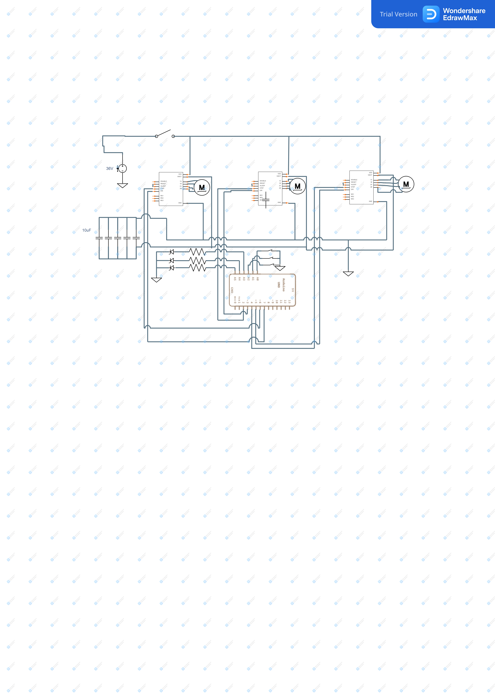

Electrical System
Shockingly fast.
Final Circuit Diagram.

Where every other aspect of our project was novel and posed unique challenges, we went with a proven approach for the electrical system as to not needlessly cause ourselves trouble. Even then, we had to evaluate multiple options before coming to our final solution.
Exploration
We initially experimented using H-Bridges instead of stepper drivers. While this was sufficient for completing sprint one, we realized that the overhead of controlling using an H-Bridge instead of a dedicated driver would result in lower speeds and limit the libraries available to us. Moving into sprint two, we explored using an off the shelf RAMPS shield on an arduino designed for CNCs and 3D printers. Unfortunately, either due to negligence or poor quality, we could not get the shield to work and burned out the drivers in the process.
We were convinced stepper drivers were the right solution space, so we purchased new drivers and ditched the shield for our own control circuitry. The drivers have a simple two pin interface, which makes hooking them up to the Arduino GPIO straightforward. At this point, we were able to crimp together some extension cables and start driving the gantry.
Final System
Our electrical system also includes two mechanical endstops placed at y=0 and x=0. These are connected to the hardware interrupt pins for use during zeroing and powered by the logic rail. All of the stepper drivers are configured the same except for the GPIO pins controlling them. They receive power from the logic rail (5V) and then motor rail (12-32V). ~ENABLE is pulled low to keep them enabled and microstepping is not configured as we care more about speed than ultra precise motion. We initially used 12V for the motor rail, but as we neared the speeds we were hoping for the steppers began to slip as soon as there was any load. After some research, we learned that increasing the motor voltage will increase torque allowing for higher speeds. Based on this, we switched to a 32V power supply as it is still safely within the 35V the drivers are rated for. When we revisited the datasheet was also added the suggest 47uF-100uF smoothing capacitor in the form of 5 100uF electrolytic capacitors to protect the power supply from current spikes.